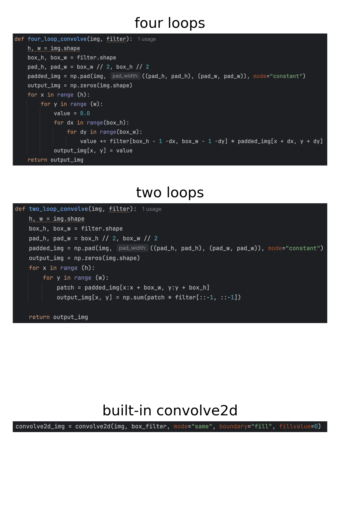
I prefer dogs to selfies :) Here's the dog's picture convolved with different methods:
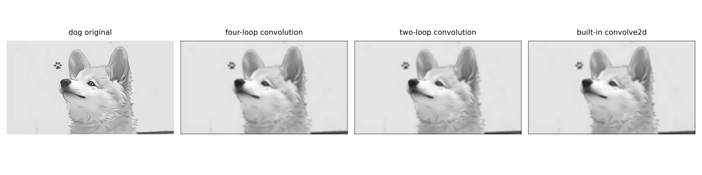
While the results using three algorithms of convolution look the same, they are different in runtime and potentially in boundary handling.
1. Runtime
- four loops: 4.387431083014235 sec
- two loops: 0.5615172919933684 sec;
faster than four loops: it leverages np.sum on each region instead of looping over kernel elements.
- built-in convolve2d(): 0.02003837501979433 sec; even faster: leverages the Fast Fourier Transform (FFT) for large arrays.
2. Boundary Handling
Four loops and two loops both use np.pad, padding the edges with black, with the size to be half the size of the convolution kernel. The built-in scipy.signal.convolve2d(..., mode="same", boundary="fill", fillvalue=0) is the same with these specific parameters. However, the built-in function also supports other boundary options ("symm", "wrap", etc.), while the NumPy-only implementations do not handle is modified manually.
Here are also results of convolved images using Dx and Dy:
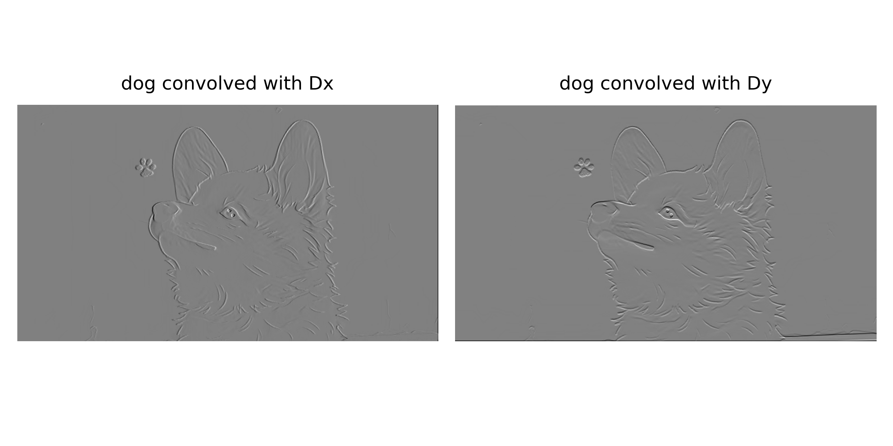
Partial derivatives in x and y:
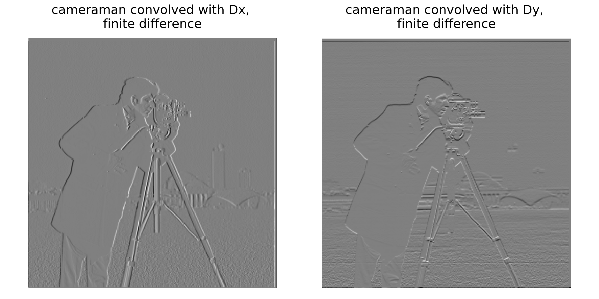
(Binarized) gradient magnitude images:
The function binarizes the gradient magnitude image by choosing a threshold at the 92nd percentile of pixel values, meaning only the strongest ~8% of gradients are retained. Pixels above this threshold are set to 1 (strong edges) and the rest to 0.
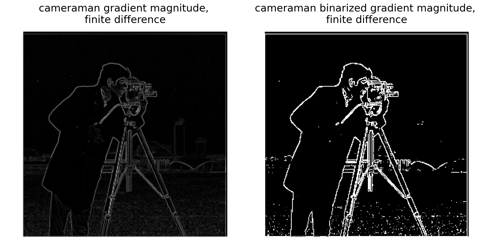
$$ G(x,y) \;=\; \frac{1}{2 \pi \sigma^{2}} \exp \!\left( -\frac{x^{2}+y^{2}}{2\sigma^{2}} \right) $$
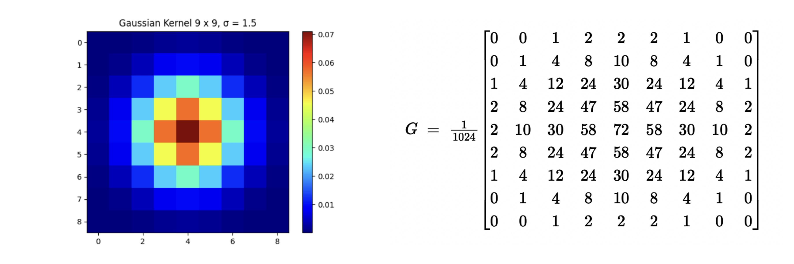
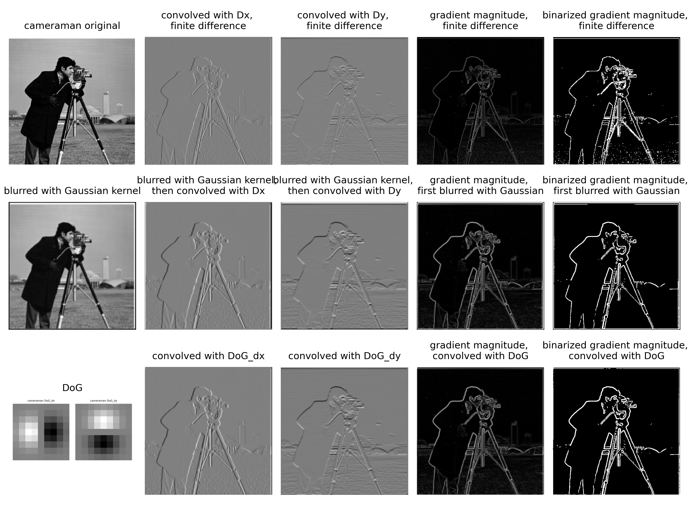
1. Finite difference vs. Gaussian blur: (1st row vs. 2nd/3rd row)
Apparently, adopting gaussian blur reduces noise in comparison to using finite difference. This is because a Gaussian blur acts as a low-pass filter, smoothing out small, rapid intensity fluctuations (i.e. high-frequency noise). After blurring, the image has less noise, so it will highlight true edges rather than random pixel-level variations.
2. Differentiate after smoothing vs. Convolve with derivative of Gaussian (DoG): (2nd row vs. 3rd row)
As is shown in the second and the third columns, these two algorithms generate almost the same result.
a. The 2nd row is induced by differentiating after smoothing:
(i) Gaussian blur using a Gaussian kernel. -> blurred cameraman
(ii) Take partial derivatives using Dx and Dy.
b. The 3rd row is induced by convolving with derivative of Gaussian (DoG):
(i) First take partial derivatives of the Gaussian kernel to get DoG.
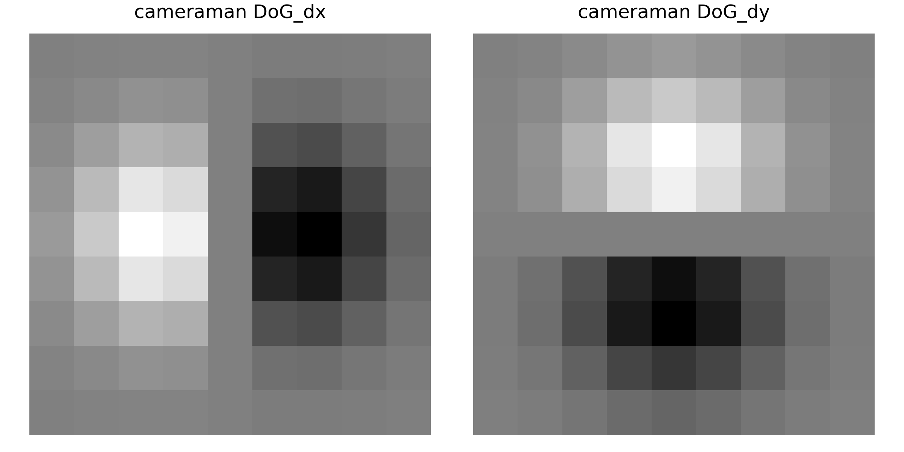
(ii) Apply gaussian blur using DoG instead of the Gaussian kernel
According to the Derivative Theorem of Convolution (see below), the two algorithms should be the same.
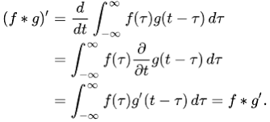
a. Blur the image
Apply Gaussian blur to the input image, generating a smoothed version of the original, which contains low-frequency signals of the input.
b. Subtract to get the high frequency signals
\[ \text{high_freq} = \text{original} - \text{blurred} \; (\text{i.e. low_freq}) \]
Use the original image to subtract the smoothed image, leaving high frequency signals.
c. Sharpen the image
\[ \text{sharpened} = \text{original} + \alpha \cdot \text{high_freq} \]
Choose an arbitrary alpha. Here I used alpha = 1.0 for taj and then alpha = 5.0
As is shown in the images below, the larger the alpha, the clearer the edges look like.
The edges may even look too crisp and you may start to see halos (bright/dark outlines around edges).
Colored noise in flat areas also gets amplified.
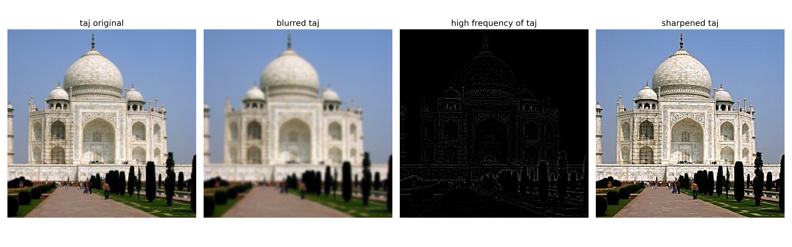
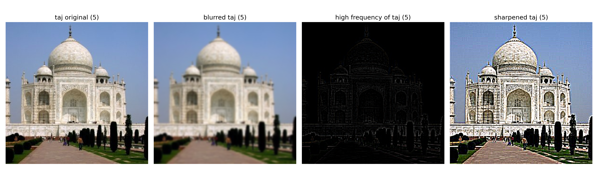
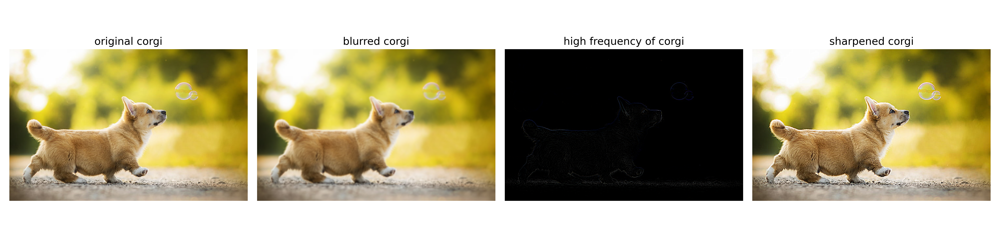
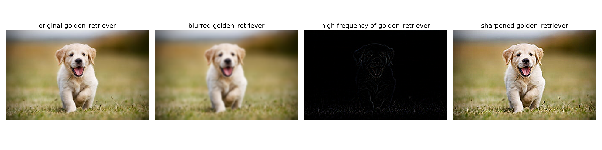
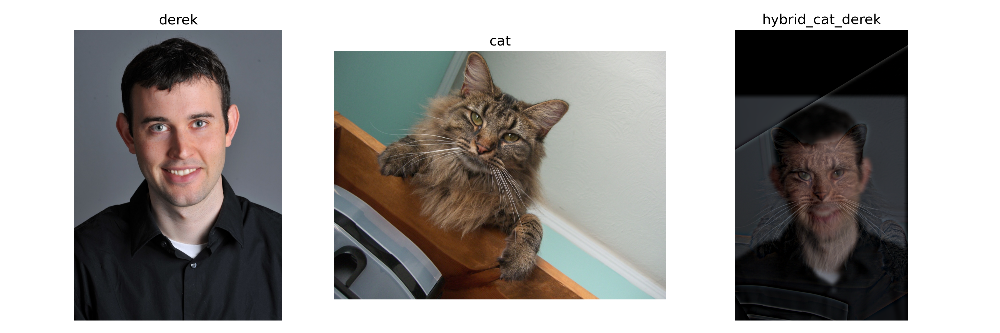
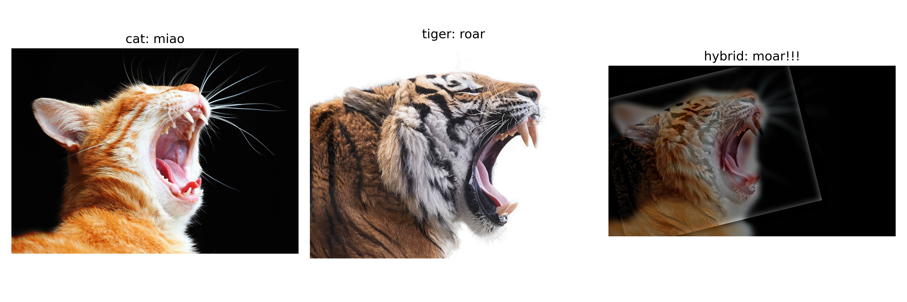
Input 1 (dog) is to be low-pass filtered, and Input 2 (cat) is to be high-pass filtered.
The FFT of the original images look similar, with some light gathering in the frequency domain while the axes to be significantly lighter.
Then, the low-pass filtered image mainly preserves the lighting concentrated in the center and on the axes, while the high-pass filtered image maintains light more broadly across the image. This aligns with intuition: a low-pass filter retains low-frequency information (broad, smooth structures) and removes fine details, while a high-pass filter does the reverse, highlighting edges and textures.
In short, the low-pass filter captures the “overall shape,” the high-pass filter captures the “details,” and their combination in the FFT naturally brings both together.
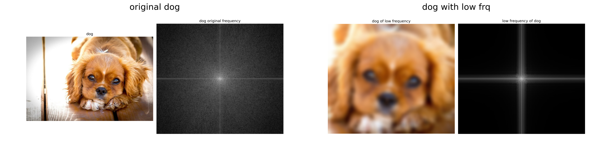
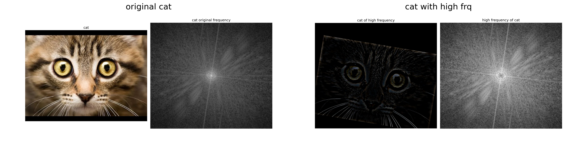
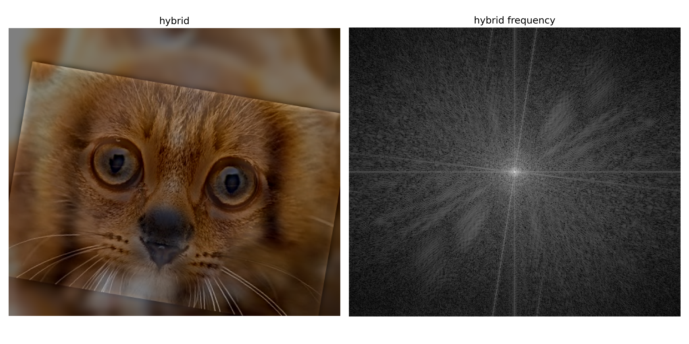
Gaussian stacks:
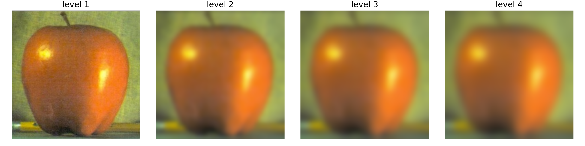
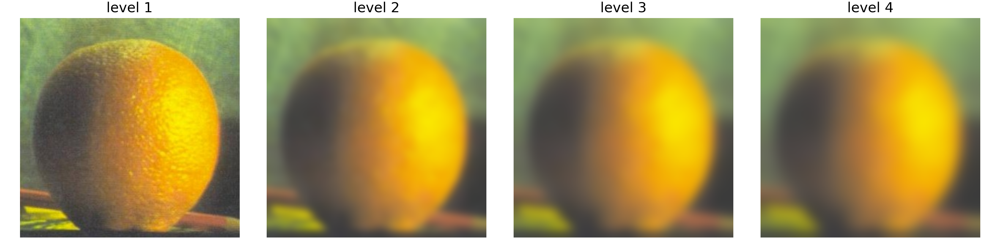
Laplacian stacks:
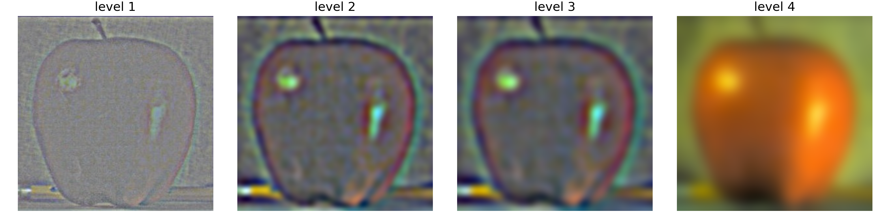
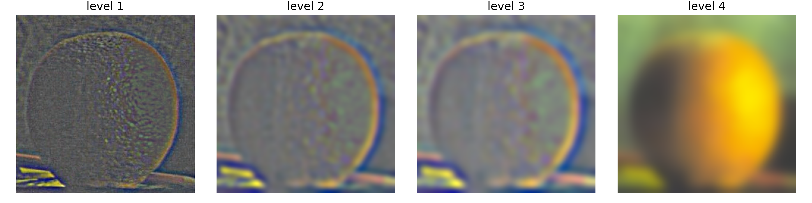
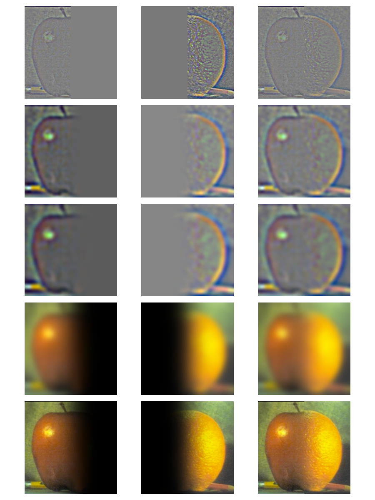
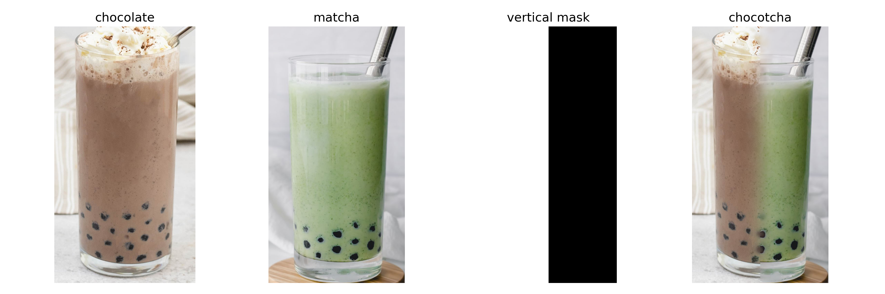
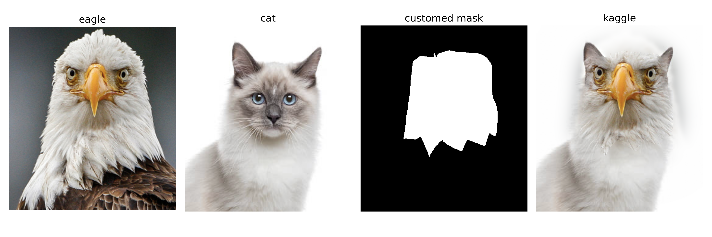
1. Build the Gaussian stacks:
- Choose K levels (here I chose K = 4)
- Take the original image as level 1
- Apply Gaussian kernel K-1 times and take the one after i-th time to be level i+1
- Do the same for two input images and the mask respectively
2. Build the Laplacian stacks:
- Take the difference of consecutive Gaussian blurred images
$$ L_k(I) = G_k(I) - G_{k+1}(I), $$
- Take the K-th image in the Gaussian stack to be also the K-th one in the Laplacian stack
$$ L_K(I) = G_K(I) $$
- Do the same for two input images respectively
3. Blend per level with the blurred mask:
\[ l_k = l_k^A \cdot m_k + l_i^B \cdot (1 - m_k) \]
L for Laplacian, k for the k-th level
4. Add up the blended images
- Add up all the blended images per level and get the final blended one.
$$ I_{\text{blend}} = \sum_{k=0}^{K} \ell_k $$